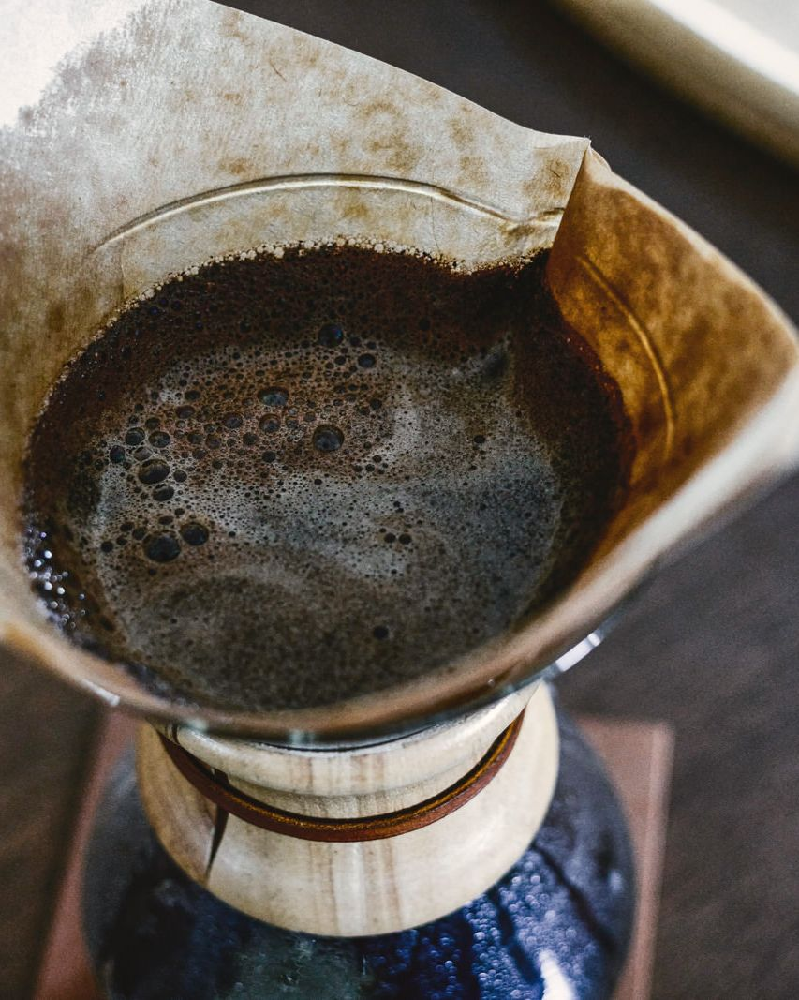
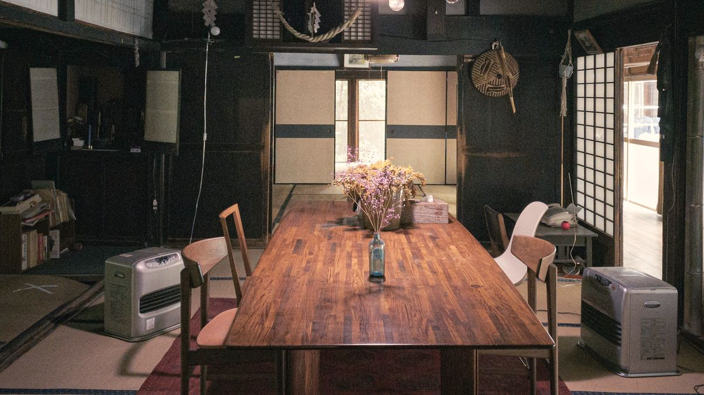
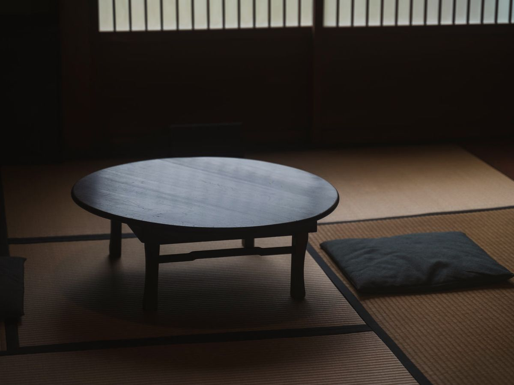
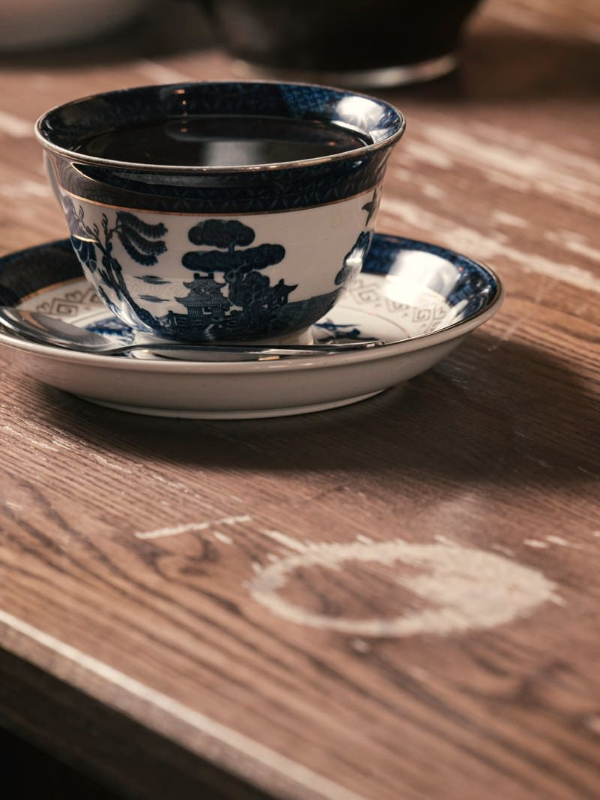
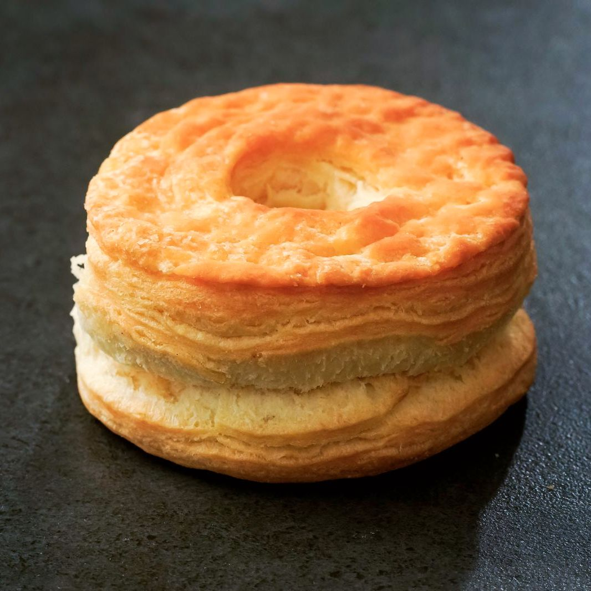
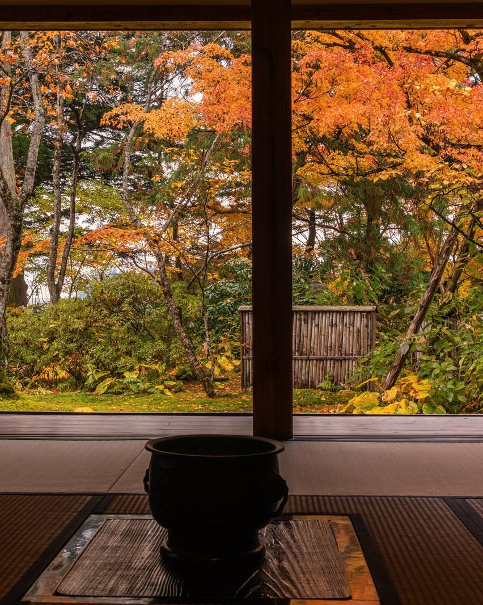
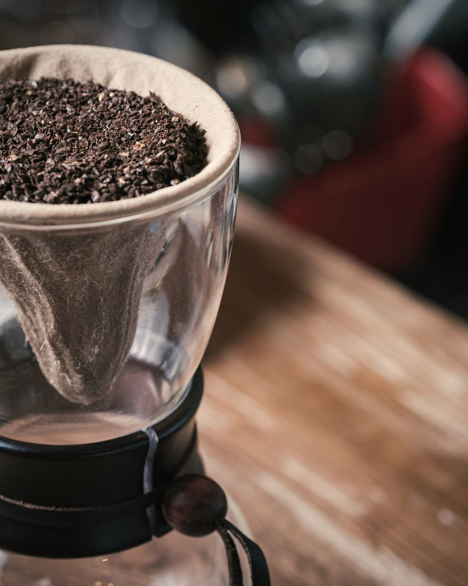
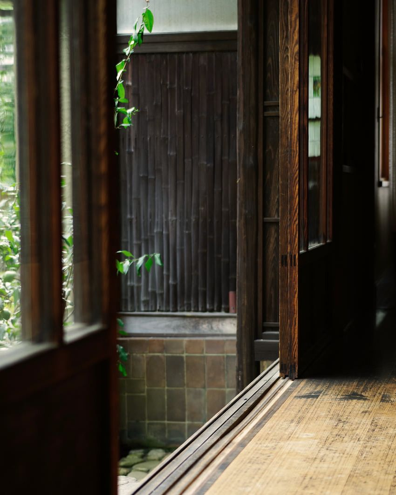
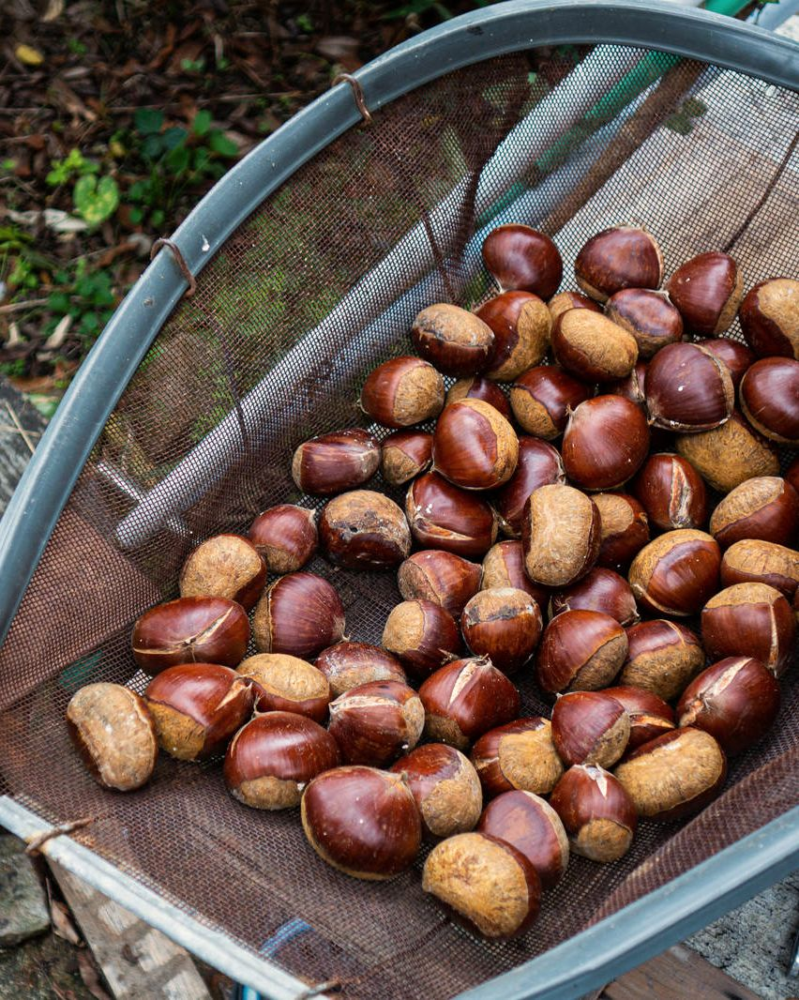

毎朝、蔵の奥で焙煎
小さな焙煎機で、一度に焼くのは一キロだけ。煎りたての豆を、一杯ずつネルとペーパーで淹れ分けます。
はじめての方には、苦みのやわらかい「蔵ブレンド」をおすすめしています。

築九十年の蔵で淹れる、自家焙煎の珈琲と
小布施の栗の焼き菓子。
小布施の通りから一本入った路地に、昭和のはじめに建てられた味噌蔵があります。
厚い土壁のおかげで、夏はひんやり、冬はほんのり暖かい。その蔵を、二年かけて少しずつ直しました。
珈琲豆は、毎朝この蔵の奥で焙煎しています。焼き菓子には、町の農家さんから届く栗を使います。
席は十二席だけ。急がずに、ゆっくりしていってください。



小さな焙煎機で、一度に焼くのは一キロだけ。煎りたての豆を、一杯ずつネルとペーパーで淹れ分けます。
はじめての方には、苦みのやわらかい「蔵ブレンド」をおすすめしています。

秋は蒸した栗でモンブランを。冬から春は、栗の甘露煮を刻んで焼き込んだパウンドケーキを。
お菓子は毎朝焼いて、なくなりしだい終わりです。お取り置きもできます。

梁と土壁は、建てたときのまま残しました。床は地元の大工さんと張り直した杉板です。
奥の座敷は、小さなお子さま連れの方にもくつろいでいただけます。



| 時間 | 月 | 火 | 水 | 木 | 金 | 土 | 日 |
|---|---|---|---|---|---|---|---|
| 10時〜17時 | ○ | 休 | 休 | ○ | ○ | ○ | ○ |
はい、空いていればそのままどうぞ。土日と祝日のお昼すぎは満席になりやすいので、ご予約がおすすめです。
大丈夫です。奥の座敷（四席）は靴をぬいで上がれるので、小さなお子さまとご一緒の方に人気です。ご予約のときに「座敷希望」とお書きください。
できます。モンブランだけは崩れやすいので、店内でのお召し上がりのみです。贈り物用の箱（のし付き）は前日までにご注文ください。
クレジットカード、交通系ICカード、QRコード決済が使えます。